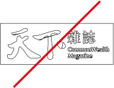

LOGO 基本規範
此處所標示之 CI 格線圖，明白標示精確的尺寸與各元素之間的關係，在複製 CI 時應嚴格遵守此規範，其他 CI 組合，只可使用本手冊所提供的複製圖樣，不可自行重繪。
尺寸規範
雜誌：CI 縮小使用時，如寬度小於 3 公分使用無英文 logo。最小尺寸不得小於 2 公分。
數位產品：寬度在 80px 以上使用標準，寬度在 80px 以下使用無英文。最小寬度不小於 68px。
本方格線製圖 CI 因應無法以電子圖檔輸出或製作戶外超大型廣告等之特殊狀況下使用，同時可以依據此方式檢查製作物是否符合標準規格。
安全範圍
CI 基本組合使用時，須考量視覺獨立性及顯著性，以塑造鮮明的印象，以免造成不良的視覺效果。
- 禁止將基本組合作任何變形。
- 禁止任何改變基本組合之色彩。
- 當基本組合在顏色淺色的色彩背景下，基本組合無需搭配白底使用。
- 當基本組合在顏色深色的色彩背景下，基本組合需搭配白底（CI 與色彩背景圖的安全距離）使用，以防基本組合辨識度不佳。
色彩規範
隨著資訊溝通化的時代來臨，有效運用圖形，符號及色彩等視覺語言，傳達特定意義的形象，提升大眾識別度及認同感，是一項重要的視覺傳達概念。
標準色
CMYK－0 100 100 0
RGB－216 12 24
HEX－D60C18
PANTONE－186 C
黑色
K－100
RGB－0 0 0
HEX－000000
單色運用規範
因應背景色彩彩度不同 ， 企業 CI 的呈現方式亦隨之改變。
CI 在無彩色 100%～0% 之色度內 ， 高於 50% 時，使用白線框；低於 50% 時，以標準 LOGO 為準；在於 50% 時 ， 以標準 LOGO 為準。
CI 之不適當使用示範
企業 CI 在任何應用上，均應以原設計之形象出現，使之易於識別及統一視覺形象；不得改變造型、顏色，而導致混淆企業識別形象。
不可任意將 CI 加上任何框線
不可任意更換 CI 顏色
不可使用只有外框線的 CI
不可使用有外框線的 CI
不可任意將 CI 用漸層方式呈現
集團 CI 排列順序
企業 CI 的排列順序為：天下／康健／親子／出版／學習